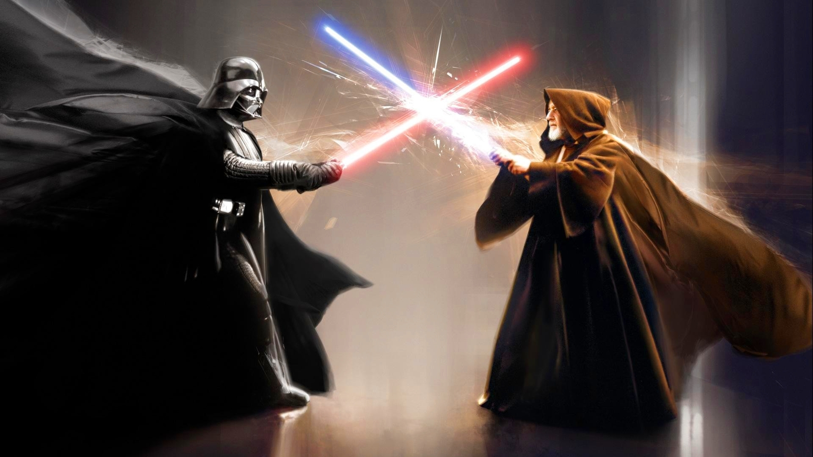
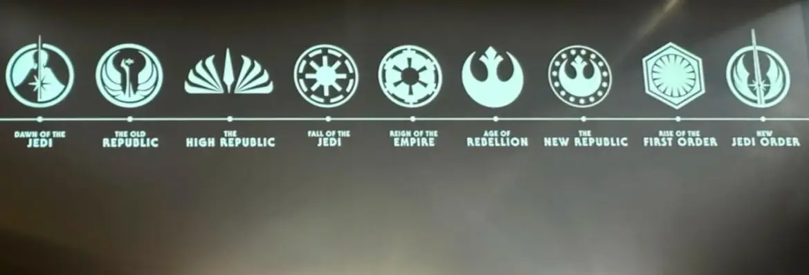
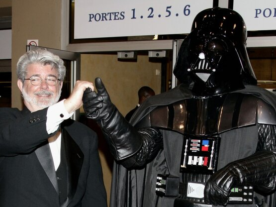
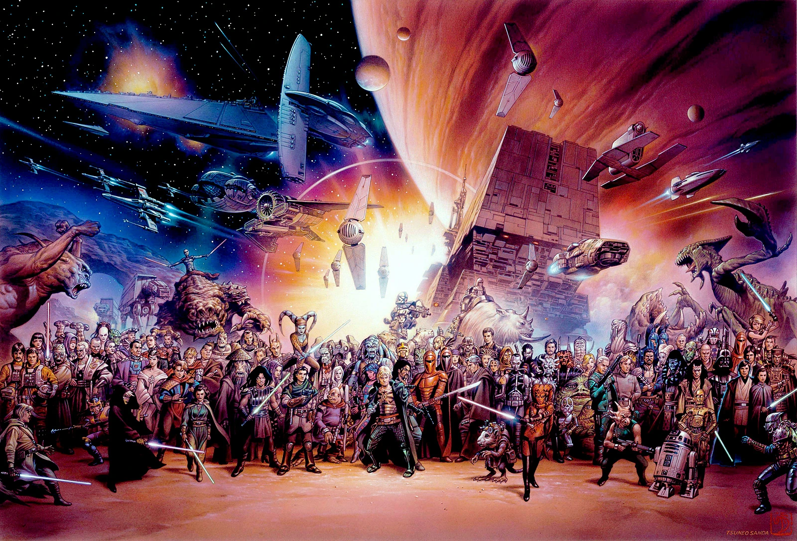
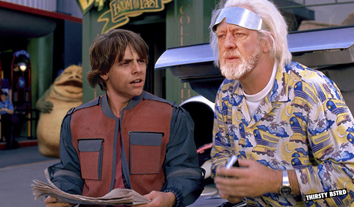

Введение в сагу
«Звёздные войны» — это эпическое путешествие, начавшееся в 1977 году с мечты Джорджа Лукаса. Сага рассказывает о вечной борьбе света и тьмы, героях и злодеях, об искусстве магии и технологий, которое завораживает поколения фанатов по всему миру.
История «Звёздных Войн»
Посмотрите захватывающий трейлер оригинальной трилогии:
Хронология и структура саги
Вселенная «Звёздных войн» охватывает девять эпизодов, рассказывая историю семьи Скайуокеров. Помимо основной саги, мир «Звёздных войн» включает спин-оффы, такие как «Изгой-один», «Соло», и сериалы, например «Мандалорец» и «Асока».
Мифология и философия
Сила объединяет все живое. Она — ключ к пониманию дуальности добра и зла, баланса и борьбы. Джордж Лукас черпал вдохновение из философий и мифов, чтобы создать уникальный мир, в котором каждый может найти что-то своё.

Культовая музыка
Погрузитесь в атмосферу галактики с помощью знаменитой композиции Джона Уильямса:
Влияние на культуру
«Звёздные войны» открыли новую эру кинематографа, подарив миру технологии, которые до сих пор используются в фильмах. Фразы из саги, такие как «Да пребудет с тобой Сила» и «Я твой отец», стали частью массовой культуры.
Фанатская культура
С момента выхода первого фильма миллионы поклонников объединяются, чтобы делиться своими историями, создавать костюмы и отмечать День «Звёздных войн» — 4 мая. Фан-сообщество стало неотъемлемой частью этой легендарной саги.
Будущее франшизы
Мир «Звёздных войн» продолжает расти. Новые фильмы, сериалы и игры обещают ещё больше увлекательных историй, которые раскроют новые грани далёкой-далёкой галактики.
